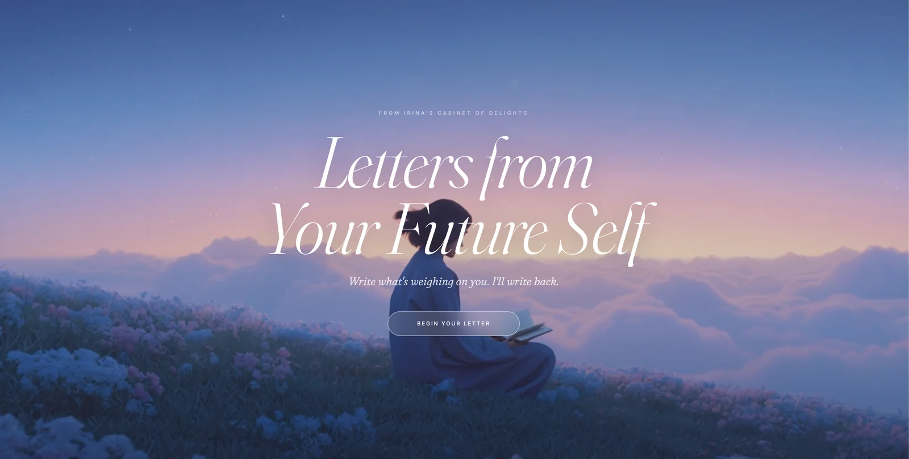

Cosmic Pet Portraits
Your pet, reimagined as a cosmic entity. AI-generated portraits so eerily right that people cry a little. A universe that noticed your animal.
Visit cosmicpets.love →
Specimen seen through the portal
Small, lovely apps that are highly emotional and deeply personal. Each one takes something ordinary — a pet, a feeling, a memory — and returns it transformed. Bigger, more beautiful than before.
Your pet, reimagined as a cosmic entity. AI-generated portraits so eerily right that people cry a little. A universe that noticed your animal.
Visit cosmicpets.love →
Specimen seen through the portal

Delivered from ten years ahead
Dear you, ten years from now —
Write today. Receive a tender, knowing reply from yourself ten years from now — reflecting on your current worries with love and impossible perspective.
— with love, from further along
Visit letters.irina.love →Every life deserves a score. Tell it your story and receive a deeply personal playlist that sounds like you.
Pressed for an audience of one
The garden of resilience
Something tender is growing. A tool about renewal, grief, and what quietly returns after loss — built for the moments you need to feel less alone.
Visit bloom.irina.love →Nineteen cats met along the way — stationed in doorways, on market carts, under neon signs. Unhurried, perfectly at home in the beautiful chaos of it all.
View the series →Twenty-five photographs made in the current of the city — candid portraits, mountain cities, neon and midday glare, the quiet between crowds.
View the series →Twenty-five studies in surface, material and light — from neon-drenched rooftops and dense residential towers to the extraordinary detail of couture embroidery.
View the series →I take something ordinary and return it mythic.
Pets become cosmic beings. Moods become oceans. Your future self offers perspective. Memories become something you can hold.
Each tool is a small act of attention, the moment technology stops being cold and becomes something close to tender.
Always asking the same question: does this make someone feel joy?
I'm a product designer and artist who loves to build tools of delight, small apps that sit at the intersection of AI and emotion. My tools are personal, playful, and designed to make you feel something real. irina.love is the home for everything I'm building, one delightful tool at a time.
— irina